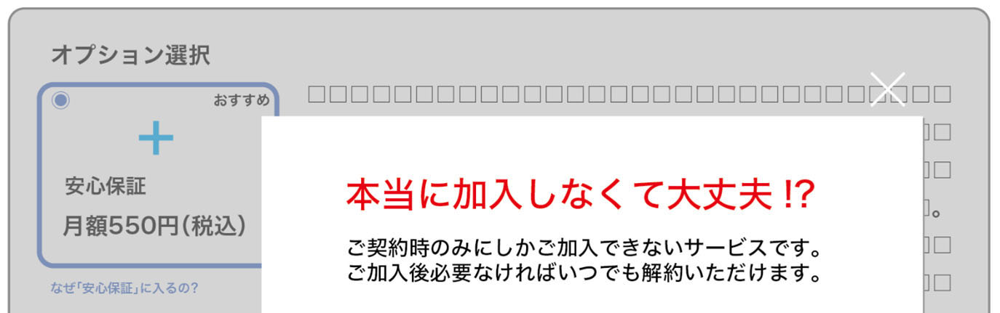
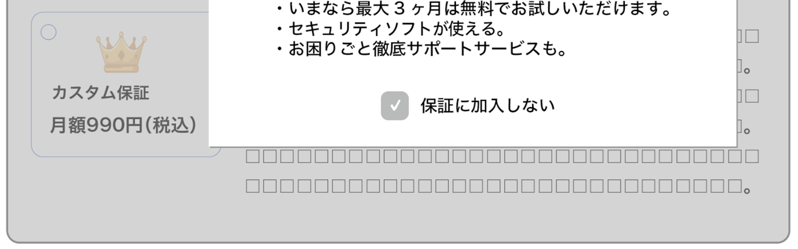

ダークパターン事例⑦ 感情のゆさぶり
資料での説明
消費者に特定の選択肢を選ばせるため、感情を利用して人を操る言い回しになっているもの
【例】
- オプションを選択せずに進もうとすると「本当に加入しなくて大丈夫！？」というポップアップが現れ、消費者を引きとめようとする。


example-travel.jp/booking
本当に大丈夫？
補償なしで旅行しますか？
もしもの事故で高額な負担が発生しても、当社は責任を負えません。
example-travel.jp/booking
旅行補償オプション
料金: 1,200円
旅行中の治療費を最大100万円まで補償します。詳しい対象・対象外条件を確認できます。
解説
「危険を承知で」「本当に大丈夫？」などの言葉は、選択に必要な事実ではなく感情を刺激し、事業者が望む行動へ誘導します。
改善例では料金・補償範囲・対象外条件を提示し、どちらのボタンも中立な表現にします。断る選択を責めないことが重要です。